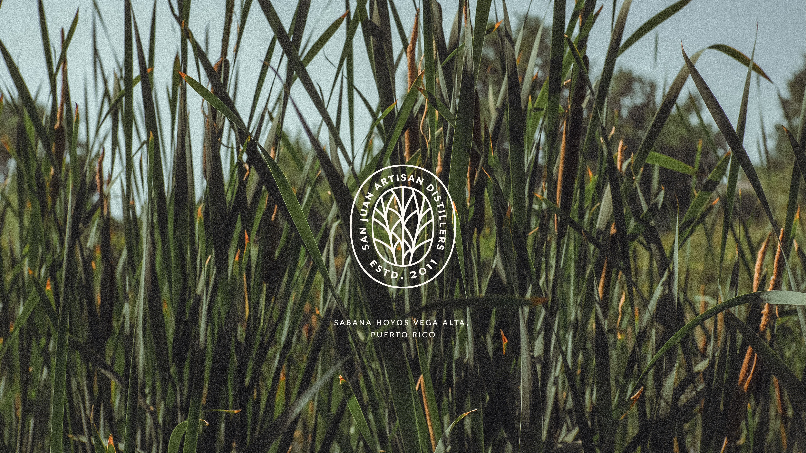
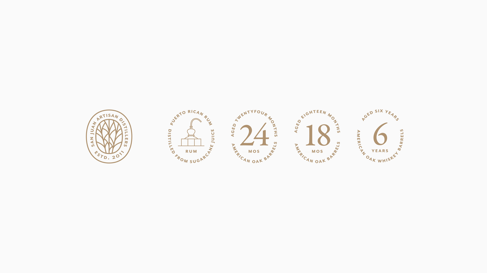
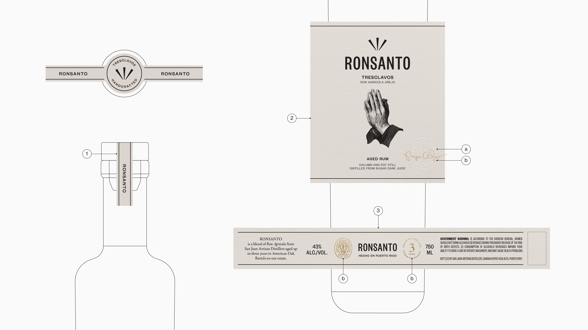
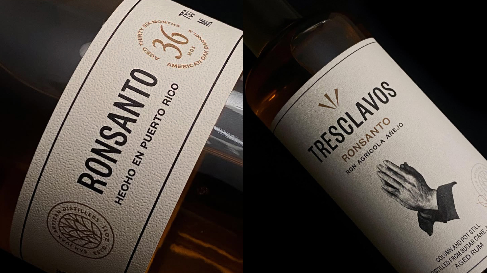
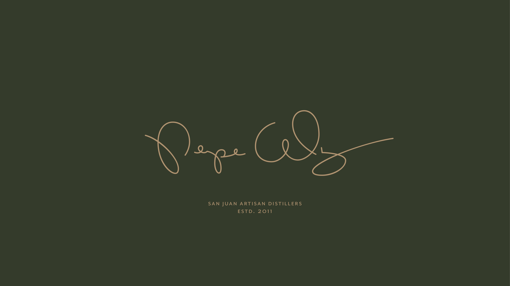

San Juan Artisan Distillers
San Juan Artisan Distillers is an estate sugarcane distillery located in Vega Baja, Puerto Rico, where they grow, ferment, and distill their own sugarcane to produce agricultural rums and spirits inspired by the tradition of Puerto Rican rum. The brand includes Ron Pepón, Tres Clavos and Ron Capicú, all made using a farm to bottle approach that honors the distillery’s origins and local raw materials.
The distillery needed a brand that reflected its core values and vision: authenticity, craftsmanship, and a deep connection to the land. To convey this, a seal was designed featuring the distillery’s name and a stylized depiction of sugarcane, conceived as a central emblem of identity. This seal is used across official documents and product labels, and is supported by a system of secondary seals that denote the rum’s quality, consistency, and aging. Together, these elements reinforce the brand’s visual coherence and artisanal narrative.




